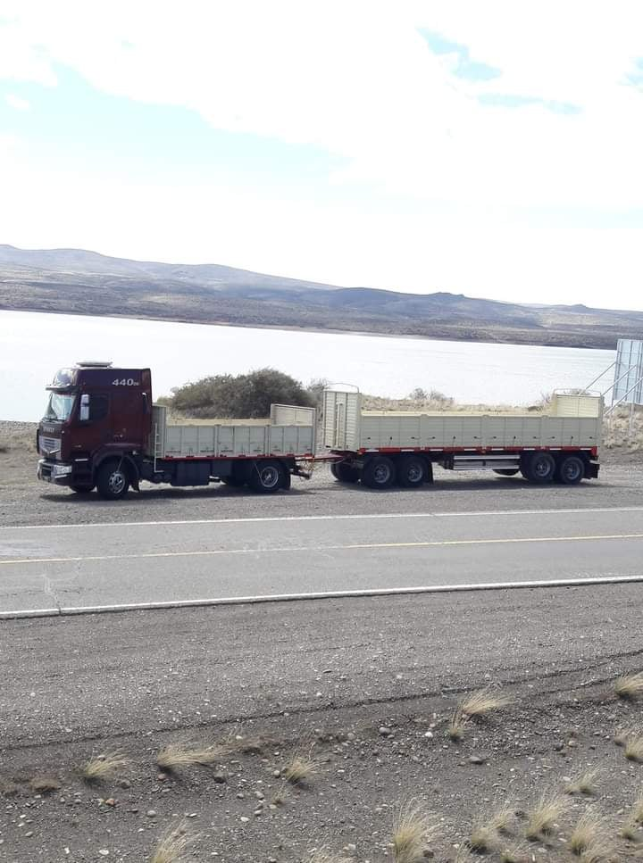

Camión con Semirremolque
Ideal para cargas generales y transporte de larga distancia.

Semirremolque Baranda
Adaptado para transporte agropecuario e industrial.

Semirremolque Furgón
Especial para mercadería con protección total.